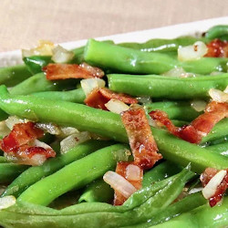

Grandma's Green Bean Casserole

Description:
This traditional style green bean casserole is a universal favorite. Good as you remember it.
Ingredients:
- 2 tablespoons butter
- 2 tablespoons all-purpose flour
- 1 teaspoon salt
- 1 teaspoon white sugar
- 1/4 cup onion, diced
- 1 cup sour cream
- 3 (14.5 ounce) cans French style green beans, drained
- 2 cups shredded Cheddar cheese
- 1/2 cup crumbled buttery round crackers
- 1 tablespoon butter, melted
Directions:
- Preheat oven to 350 degrees F (175 degrees C).
- Melt 2 tablespoons butter in a large skillet over medium heat. Stir in flour until smooth, and cook for 1 minute. Stir in the salt, sugar, onion and sour cream. Add green beans and stir to coat.
- Transfer mixture to a 21/2 quart casserole dish. Spread shredded cheese over the top. In a small bowl, toss together cracker crumbs and remaining butter, and sprinkle over the cheese.
- Bake for 30 minutes in the preheated oven, or until the top is golden and the cheese is bubbly